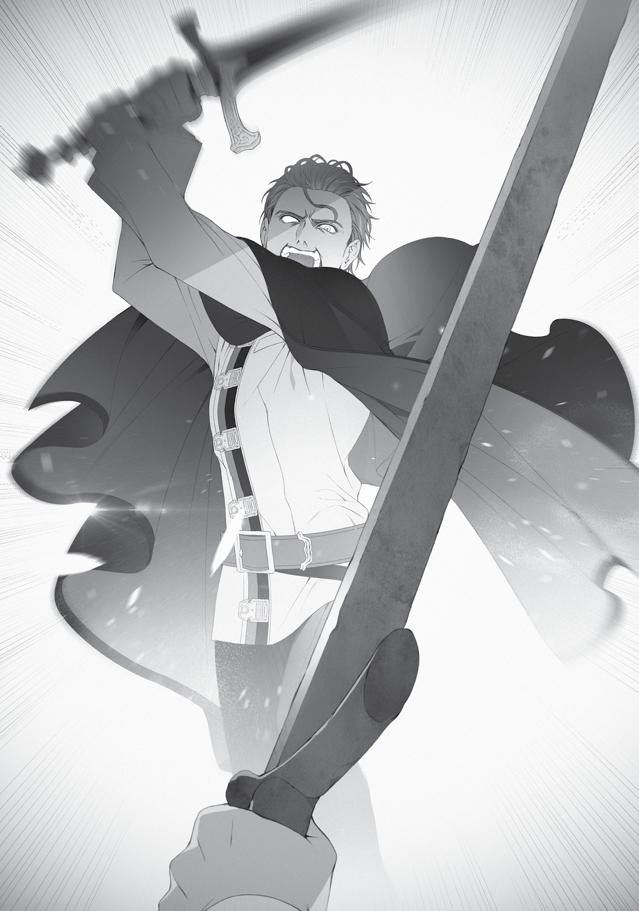

Chapter 7:
End of the Wedding Reception
THE RECEPTION was a success. We didn’t seal our promise with a kiss or exchange rings, but spent the whole time eating, drinking, chatting, and having a good time. I appreciated the ease and informality of it all.
People broke into groups of two or three when it was time to go home. The first to bid us goodbye were Linia and Pursena. Perhaps it was considered good manners among the beastfolk not to linger too long?
“Well, mew… Enjoy yourself, Boss.”
“Now you really are the boss of the school. I’m looking forward to next semester.”
After saying that, the two of them began trudging home through the snow.
The second to leave was Nanahoshi, with whom Luke had randomly struck up a conversation. Most of it was him trying to hit on her, though he wasn’t being completely transparent about it. He made a concerted effort to talk about food and clothes, topics it seemed Nanahoshi might be interested in. He was good at sounding interested in a topic the other person cared about, even though he was a bit out of his element here. Still, it was educational. Not that I intended to make use of such knowledge.
Nanahoshi, on the other hand, made no attempt to disguise how clearly bothered she was by him. She looked at him in annoyance; she sighed in annoyance. In the end she ran to the bathroom just to escape him. When she re-emerged, she came straight over to where I was, looking agitated. “It’s about time for me to leave. That one’s annoying me.”
“All right, then. I’m sure you’re exhausted. Thank you for coming today,” I said.
“I’ll be counting on your help again tomorrow. And one more thing.”
“What’s that?”
“Sometime in the future, can I use your bath?”
Apparently, she’d gotten a look at our bathroom while on the way to the restroom. As a fellow Japanese person, she probably missed baths. Her name was Shizuka after all. “Sure. But you might have Nobita peeking in at you—”
“Forget I said anything.”
“No, I’m just joking, honestly. You can come any time.”
Nanahoshi nodded and started to leave. The sun hadn’t set yet, but I wondered if she would be safe walking home alone, even though she’d come here herself, and had magic items for her own protection.
“Escort Master Silent back to her residence, please.”
“Yes, Princess.”
While I was hesitating over what to do, the Princess moved to send one of her attendants as an escort. I should’ve expected it of someone with such charisma. However, Nanahoshi stubbornly refused the offer and went home by herself.
Next were Zanoba and Julie, then Badigadi. Badigadi, Zanoba and Ariel had all shared drinks while happily chatting amongst themselves. Since I knew of Badi’s affinity for alcohol, I’d prepared an appropriate amount just to be sure. But it apparently hadn’t been enough. Before I knew it, two of the three wine casks I’d stashed in the basement were empty. I debated sending out for more, but before I could, Zanoba got hammered.
“Bwahaha! You sure are weak for a ‘Blessed Child’,” Badigadi chortled.
“Ha ha ha…urgh, I’m ashamed. It seems I got carried away.”
“Master, are you okay?” Tiny Julie was trying to support Zanoba as he stumbled.
“Hee hee hee. Maybe you should rest in one of the rooms here?” Ariel suggested. She hadn’t drunk that much herself—keeping her wits about her was probably part of her training as a highborn lady. Everything she did was poised elegantly, from the way she tipped her cup to the way she laughed. She was probably a bit tipsy, but the faint blush the alcohol had given her just made her more charming.
“No. As a pupil, and a proud member of the Shirone Noble family, it already brings me shame to be so utterly inebriated in my own master’s house. I’ll take my leave while I can still walk.”
Zanoba came to say his farewells to me. Personally, I’d have been fine with him staying in our guest room… Well, whatever he wanted to do.
“Suppose I should be off, too. Princess of Asura, stay well!” said Badigadi.
“Yes, your highness. I hope you will stay in good health as well.”
“Bwahaha! I don’t get sick or injured!”
And so, both Zanoba and Badigadi took their leave. Huh. I’d thought for sure they would be the last ones to leave.
The reception drew to a close as Ariel and her group prepared to depart. While they were doing that, I decided to check on Elinalise. I went up to the second floor and peeked into the guest room.
I was greeted by an exciting display—no no, not the sexual kind. Just Elinalise using Cliff’s lap as a pillow. Apparently, he was done comforting her, and they’d moved on to the lovey-dovey bits. I felt kind of envious. I’d have to do the same with Sylphie later.
“Um, Mister Cliff, I’d like to talk to grandmo—I mean, Miss Elinalise. Do you mind?” Sylphie asked timidly as she crept up behind me.
Cliff looked to me as if he were asking for help. Elinalise lifted herself up and nodded at me. I nodded back. At that, Cliff stood up and left the room.
“Thanks, Rudy.” Sylphie smiled softly before heading inside.
Cliff and I headed down the stairs together. He looked anxious. “Are those two going to be okay?”
“If they aren’t, we just have to be there for them afterward,” I replied as we made our way to the ground floor.
When we arrived, Ariel and her lot had just finished their preparations to depart. The two attendants were helping Ariel slip her coat on. When she saw me, she dipped her chin. “Lord Rudeus. Thank you for today.” The rest of her party likewise bowed deeply.
I bowed in return, Japanese-style, though I was pretty sure I wasn’t supposed to do that in this situation.
“How is Sylphie doing?” Ariel asked.
“She’s talking to Elinalise right now.”
“I see. It was certainly a surprise to find out Sylphie had family here. I thought she’d lost them all.”
“Indeed. It really is a small world.” Not to mention that Elinalise and Sylphie were as different as day and night. Mainly in terms of chastity.
“In any case, this is the perfect opportunity. Lord Rudeus, may I have a moment of your time?”
Her words hinted at an ulterior motive, but I nodded anyway.
“Very well, then. Come this way.” As she spoke, Ariel quickly cut across the room and moved into the hallway. From there she proceeded to the front entryway, opened the door and headed outside. As if it came as naturally as breathing to them, the other three tailed her. I followed suit.
Outside, the sun was beginning to set. Ariel stopped along the path where people had been walking and the snow had barely had a chance to pile up. She turned back to look at me.
“Lord Rudeus. I realize it might be inappropriate of me to ask…” A moment’s hesitation. “Would you agree to a duel with Luke? No magic, just sword against sword.”
A very sudden request. Unable to respond, I pursed my lips. Luke looked completely composed, his hand resting on the hilt of his sword. This was clearly not something Ariel had decided on the spur of the moment. “Could you explain your reasoning, at least?”
She just smiled softly. “Just for fun.”
“‘For fun’?” I said, and Luke unsheathed what was a very real sword. Considering it was double-edged, he wasn’t going to be hitting me with the blunt side. “Can we use wooden swords, at least? I don’t even have a real sword.”
“I don’t mind if you conjure one for yourself,” she replied.
“I thought you said no magic?”
“I’m fine with you using it to create a weapon.”
Very well, then. I used my earth magic to create a stone blade. I made it thick and durable, which meant that it was heavy, too. I did practice my swings every day, so I could wield it just fine, but if it hit someone in the wrong spot and the worst came to pass, they could die. It wasn’t something you should hit someone with “for fun.”
“Don’t worry,” Ariel said. “This is something Luke requested.”
“Luke did?”
“I don’t mind if you use your full power to beat him senseless.”
Without my magic, I was just an average swordsman. There was no guarantee I could beat him senseless.
“For reference, Luke is an intermediate in Sword God Style and a beginner in Water God Style. His sword is a magic item, made to cut through steel shields as easily as butter. His boots are the same as Sylphie’s, giving a boost to the wearer’s speed. His cloak can block heat, his gloves increase his strength, and beneath his uniform, he’s wearing swordproof clothing.”
“That’s incredible.” So he was garbed head to toe in a dashing hero’s gear! Even selling my freshly renovated house wouldn’t get me enough money to pay for all of that. “In other words, I might be the one getting beat senseless.”
“I doubt it. But if you do sense your life is in danger, feel free to use magic.”
“I’ll just pray he doesn’t cut me in half before I get the chance.”
Why had he proposed this in the first place? None of us would benefit from someone dying here.
“Before we begin, I’d like you to tell me why we’re doing this. Have I done something to upset you?” I asked.
“No. It’s just for fun. Of course, you can refuse if you’d like.”
“Whether I accept or not, this troubles me. Even this stone sword is deadly enough that it could kill someone if it hit them in the wrong place.”
“Luke is prepared for that possibility.”
Well, I wasn’t. I was newly married and I didn’t want to kill or be killed.
“Please,” Ariel said. Her voice was somber.
What was this match going to prove? Maybe it was some kind of Asura Kingdom tradition. I could easily picture old man Sauros saying, “If you want to take Eris as your wife, you must defeat me first!”
But Sauros was dead.
“Rudeus. Please accept. If you’re a man, then you should understand,” Luke said.
There it was—the “if you’re a man” line. An unfair remark. It was almost like he was saying I wasn’t a man because I didn’t understand.
Ah, well. It’s not like we were seriously going to go at each other’s throats.
“All right. Please be gentle with me, then.” I was going to use my Demon Eye of Foresight, at least. I didn’t want anyone to die accidentally.
“Thank you for accepting our request.”
I still didn’t understand why they were doing this, but at Ariel’s words, Luke readied himself. As soon as Cliff saw that, he called out to me, confused. “H-hey, Rudeus, you sure about this?”
“Oh, Master Cliff. If things start looking bad, please cast a healing spell immediately.”
“Y-yeah. I was already planning on that.”
Stone sword in hand, I slowly took a stance of my own. We were about three steps apart. That meant one step and we could swing at each other. It was closer than the distance I normally set for myself in my simulations.
“Now then, are you ready?”
“Yes.”
After hearing my confirmation, Ariel said sharply, “Begin!”
“Haaaaah!” Luke bellowed and kicked off from the ground. As the snow scattered, he launched his body toward mine.

He was slow. No—compared to the average person, he probably wasn’t that slow. He was probably about as quick as Linia, but still, slow enough that I could predict his movements. He was nowhere at Eris’ or Ruijerd’s level, never mind Orsted’s. He was probably a step behind Soldat, too. This was all he could muster, even with a magic item?
Luke closed in, swinging his sword diagonally. “Hah!”
His form was technically correct, and he was putting his weight into the swing. He wasn’t relying too much on his magical items, either. But he still moved much more slowly than my mental simulations.
“Hah!”
I aimed for his forearm. Sword God Style – Initial Strike, Arm Chop! It was a skill I’d learned long ago, a movement ingrained in me through hundreds of thousands of practice swings.
“Guh!”
The weight of my blade broke his arm in a single swing. He dropped his sword and it disappeared into the snow below.
“Not yet!” Luke immediately tried to pick it up with his left hand.
“No, it’s over.” I prevented him from grabbing the sword by slamming a foot into his chest, sending him flying. He went rolling through the snow. When he tried to get up again, I pointed my sword at him.
“That’s enough!” Ariel’s exclamation ended the duel.
“Grr!” Luke punched the ground with his broken hand, then groaned in pain and cradled his arm.
“Ellemoi, heal him.”
At the Princess’ command, one of her attendants raced over to him. She held his broken arm so close that her enormous breasts threatened to swallow it whole, and then cast healing magic.
“Amazing,” Cliff said admiringly. He didn’t know the first thing about swordplay, so he had no idea the match had been a joke. There were plenty of swordsmen and warriors out there more skilled than I was, such as Soldat or Eris. I was sure I couldn’t defeat either of them without using magic and my Demon Eye. Luke was merely a normal swordsman. If I hadn’t used my Eye, we might have traded a few blows, but it was just as Ariel had said. He was no match for me.
“Master Luke, are you all right?”
“I’m fine.”
Once I heard his calm reply, I tossed my stone sword aside. It sank through the snow.
Luke stood up and looked my way. His usual superficial smile was nowhere to be seen. He looked serious. “Take good care of Sylphie.”
“Of course.” Was he was testing to see if I was strong enough to protect Sylphie? “It would help if you’d explain your reasoning.”
“It’s not terribly important,” Ariel remarked. “Luke just had his own feelings on the matter. Male pride, I suppose.”
“Male pride? What, is he in love with Sylphie too?”
I hadn’t mean to make fun of him, but Ariel furrowed her brow at my question. Crap. Maybe that was a rude thing to ask.
“We all love Sylphie, but not in a romantic sense of the word,” she said. “As comrades who’ve been through life and death situations together, we share a powerful bond.”
“My apologies. It was a rude thing to ask.”
“As long as you understand.” Ariel’s expression regained its usual composure. She looked toward the house, where Sylphie and Elinalise were likely still talking. “Eventually I will return to the Asura Kingdom. There are only two paths from that point: Either I take the throne, or I die. There is a significantly higher probability that it will be the latter and the palace will be my grave.”
“Do you have to go back?”
“If I didn’t, I’d betray the memories of those who died to get me this far. It is my duty to return to Asura.”
Privilege came with responsibility. Despite her grim words, there was no emotion on Ariel’s face. Hers was the face of someone who didn’t doubt for a moment that they were doing what they must. Not that I was in a position to judge, but as far as I was concerned, that conviction made her a good candidate for the throne.
“Sylphie, however, has no such duty,” she continued.
True. Sylphie was neither a royal nor a noble; just an outsider who’d been tossed into the royal palace during the Displacement Incident.
“Sylphie saved my life. She’s been there for me as my friend this whole time—even after she found out her parents had passed. I’ve depended on her so much. But enough is enough. It’s about time I stopped relying on her and left her to walk her own path.”
Even so, Sylphie had every intention of following the Princess. They’d been through so much together. I could understand why Sylphie wanted to see things to the end. If Ruijerd had decided to challenge Laplace to battle, for instance, I’d probably have gone along with him, my legs trembling the whole way.
Wait, that probably wasn’t a good comparison. But the feeling of wanting to fight alongside your friend was the same. If Sylphie chose to follow Ariel, I would be proud of her. But if I thought it was a fight she had no chance of winning, I would want to stop her.
“Sylphie intends to stick with me to the end,” Ariel said. “But she’s married now, and if the two of you try your hardest, I’m sure you’ll eventually have children. When that happens, I expect her resolve to follow me will wither of its own accord.”
I wasn’t so sure about that. When that time came, would I even be able to stop her? I didn’t think so. If anything, I’d probably go with her to help.
“Having said that,” Ariel continued. “If you mistreat Sylphie, then I will take her back. I’m sure we can’t defeat you with a raw show of power, but there are plenty of other methods. So please, don’t make me feel like she would be better off coming with us.”
“I’ll take those words to heart.”
“Well then, Lord Rudeus. Please take good care of Sylphie.”
Ariel turned on her heel. Her two attendants bowed to me. Luke gave me a look of acknowledgment as he picked up his sword. Then the four of them left, shuffling through the snow until they disappeared, not even waiting for Sylphie to come downstairs.
As I watched them leave, I thought to myself, When that day comes, no matter what Ariel says, we’re going to be there for her.
When we returned to the house, Elinalise and Sylphie were just coming down the stairs. The former’s eyes were swollen, but she looked like a weight had been lifted off her shoulders. “Oh, Rudy. Where is Princess Ariel?”
“She just left.”
“Oh. I’m sorry for not being there. Did she say anything?”
“Just ‘Take good care of Sylphie.’”
I was still debating how best to mention the duel, but Cliff cut in front of me. “Luke suddenly challenged Rudeus to a duel! But leave it to Rudeus. He countered Luke with a single blow. Ahh, I wish I could show you the way that insufferable jerk cowered as he held his broken arm.”
You never disappoint, do ya, Cliff? Totally misread the room right there, I thought dryly. Not that it mattered, but I got the feeling he didn’t like Luke very much. Well, whatever.
When Sylphie heard that, she drew her brows together. “Rudy, you had a fight with Luke?”
“No, I wouldn’t really call it a fight. I was asked to duel him, and Princess Ariel watched us.”
“I see. Luke probably wanted to see for himself.”
“See what?” I asked.
“Your strength. Until now, Luke has been the one protecting me and the Princess.”
I understood what she was trying to say, but I was surprised to learn his zeal ran that deep. I guess you never really knew a person’s heart, huh? More importantly, my wife had just learned I’d been in a duel, and she wasn’t even worried about me? My opponent had used a real sword, after all.
“But thank you, Rudy.”
“For what?”
“For going easy on Luke. He’s weak. You’d kill him if you used your true strength.”
Apparently, it never even crossed her mind that I might lose. Poor Luke, though.
“Well, enough about me,” I said. “Are you done talking?”
“Yeah.” Sylphie nodded cheerfully.
***
So Elinalise was Sylphie’s grandmother, after all. Laws’ mother, in other words. Elinalise had birthed half-elf children all over the world and, due to the curse and her own personality, trouble followed her everywhere. Her conflict-resolution abilities were something she’d only mastered in recent decades; prior to that, she’d often left storms and scandals in her wake, some of which still haunted her.
Her reputation was particularly bad among other elves, who routinely ostracized her children just for the crime of being related to her. Many of her children and grandchildren disparaged her, trying to distance themselves from her. Elinalise stopped revealing her true name to any children she went on to have. She would raise them to adulthood, then cut ties with them. That was how she’d been living, until now.
Elinalise had known with just one look that Sylphie was either her grandchild or great-grandchild. She hadn’t intended to reveal as much to her, but when she saw Sylphie looking so happy about her marriage, she was overwhelmed with emotion. It was an emotional story. I got teary-eyed myself during the recounting of it. But Elinalise refused all attempts to comfort her, claiming this was the result of her own actions.
Once that conversation was over, Cliff called me to the corner of the room. “Rudeus?” he said.
“Yes, Master Cliff?”
“Stop with the ‘Master’ crap, and no more stiff speech. Please call me Cliff from now on. No, scratch the please—just do it.”
So there was no need to be respectful, yet he was ordering me around like an authority figure? Ah, well. I’d give him a break this time.
“It’s about Lise,” he continued.
“Okay.”
“Honestly, she’s not the person I thought she was.”
“Uh-huh. And?”
I’d understand if he felt disillusioned. After all, the person he’d loved all this time actually had not only children but grandchildren as well. Judging by her conversation, there was a possibility she even had great-grandchildren. Even I’d be considerably shocked. However, if he was going to say “Help me break up with her” after hearing that conversation, even I’d be pissed. It wasn’t like Elinalise had deceived him. Cliff had misunderstood her and fallen in love with her of his own accord. People in similar situations often felt disenchanted after hearing the truth, but it still disgusted me.
Granted, I wasn’t going to stop him. Elinalise was better off cutting a creep like that out completely and then living with us. Then, if Sylphie permitted it, we could have our own little pseudo-family—wait, no, I couldn’t be with anyone other than Sylphie. Well, hold on, you could say we were doing this for Sylphie’s sake.
“She’s even more tragic than I thought. I’m going to get rid of her curse, no matter what it takes. Since I’m a genius, I’m sure I’ll figure out how to do that eventually, but just to be certain, would you mind helping me out?”
Which one of us was the horrible piece of crap now? Me. Sorry, Cliff. “So you don’t feel disillusioned after hearing what she said?”
“Disillusioned? Of course not. Why would you even say that?” he replied without an ounce of hesitation.
“B-but the woman you love has slept with a bunch of other people and not only does she have kids, she even has grandkids, you know?”
“And what of it? I’m a follower of Millis. No matter what her circumstances are or how far she is from my picture-perfect ideal, she loves me and I have a duty to make her happy.”
He said it. I trembled. Oh crap. Maybe I really had underestimated him. I should probably call him Lord Cliff from now on. Well, maybe it wasn’t necessary to go that far. I’d just call him Master Cliff like I always did. “Okay, I understand. I am happy to be of assistance with whatever I can.”
“Yeah, it’ll be good to know I have your support.” He gripped my small hand firmly in his when I reached out for a handshake. “Also, stop being so formal. We’re friends, aren’t we?”
“I refuse.”
I was filled with a deep sense of respect toward Cliff. Meager as my help might be, I was happy to lend it to him.
***
Cliff and Elinalise were the last to go home. Now it was just Sylphie and me. The two of us began cleaning up the messy room our guests had left behind. Well, I said “messy,” but our guests had mostly been well-bred, so all we had to do was wipe down the floor where they’d spilled alcohol on it. We had quite a bit of food left over, but it was probably better than having prepared too little. We’d be eating leftovers again for dinner.
By the time we finished cleaning, the sun had set and the sky had grown dark. I lit up the place and returned to the living area. When I took my spot on the three-seater couch, Sylphie plopped down beside me. I was suddenly exhausted from the day’s events.
“A lot happened, but I’m glad it went well,” Sylphie said with a smile, resting her head on my shoulder.
“Yeah.” When I wrapped my arm around her shoulders, she leaned all of her weight against me. I buried my face in her hair and took a deep breath, drawing in her smell. Mmm, such a sweet scent.
“Rudy, that tickles.”
But she didn’t rebuff me. I kept on sniffing.
“I’m thinking about growing my hair out,” she suddenly declared.
I’d suggested she do that many times long ago, only to be refused each time. I’d always thought twintails or a ponytail would suit her, but I never thought I’d get to see it. “Are you certain that’s what you wish to do?”
“Why are you being so formal?”
“Because it’s a serious conversation.”
“Um, it’s not really that serious. I just, you know, my hair isn’t green anymore, right? Princess Ariel told me to be more feminine, but I still plan to wear pants at school, so I thought maybe I should at least let my hair grow out.”
So that was it. She didn’t feel self-conscious about her hair anymore. Curious, I asked, “You’re not going to wear the girl’s uniform?”
“No way. It wouldn’t look good on me.”
C’mon, it totally would, I thought. If she’s got to see it to believe it, then I’ll just buy her one when I get the chance.
That aside…
“Well, I’d like to see how you look with long hair. No doubt you’d be cute. Though you already look cute right now.”
“Hee hee, thank you. Okay, then. I’ll grow it out.”
That meant I would soon have to say farewell to the short-haired Sylphie. I needed to burn this image of her into my mind while I still could. Although I guess I’d be able to see her like this again if she cut her hair.
“Rudy, I’m going to work hard so your love for me stays strong.”
Why’d she have to say it like that? Now I felt teary-eyed. How did I get to be so loved? I’d have to work hard too, so her feelings for me would never fade. Apparently the smug asshole type wasn’t quite what she had in mind, so I’d quit being thick-headed and aim for being clever instead. I wasn’t sure if I could actually do it, but I had to at least try.
“Sylphie, thanks for all the work you did today.”
“Thank you too, Rudy.”
Since we were both exhausted, I decided we’d just hit the bath and then relax.
That was how Sylphie and I got married.